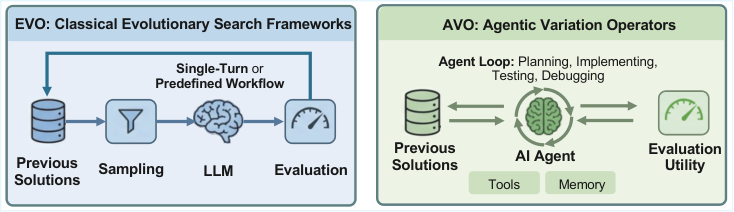
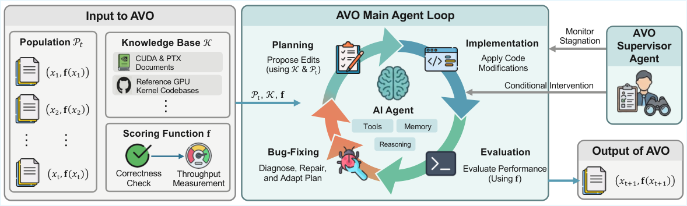

AVO: Agentic Variation Operators for Autonomous Evolutionary Search
Paper: arXiv 2603.24517 (v1, Mar 25 2026), by Terry Chen, Zhifan Ye, Bing Xu, Zihao Ye, Timmy Liu, Ali Hassani, Tianqi Chen, Andrew Kerr, Haicheng Wu, Ming-Yu Liu, Vinod Grover, Luis Ceze, John Tran, Humphrey Shi et al. The paper lists a single NVIDIA affiliation, though several authors hold CMU and UW appointments. Grounded in the full arXiv HTML including Appendix A.
TL;DR
- AVO replaces the variation operator of evolutionary search — mutation, crossover, and the hand-designed sampling heuristics around them — with an autonomous coding agent. Where FunSearch, AlphaEvolve, and LoongFlow confine the LLM to a single
Generatecall inside a fixed pipeline, AVO collapsesSample,Generate, and evaluation into one self-directed session that decides what to read, edit, and test. - Attention kernels on NVIDIA Blackwell B200: 7 days of continuous unattended evolution, 40 committed versions, 500+ optimization directions explored internally, reaching 1668 TFLOPS BF16 and beating cuDNN by up to 3.5% and FlashAttention-4 by up to 10.5% on causal MHA. Porting to grouped-query attention took 30 minutes and yielded up to 7.0% and 9.3% respectively.
- The discovered edits are genuine micro-architectural reasoning, not code shuffling — branchless accumulator rescaling that unlocks a lighter memory fence (+8.1% non-causal), correction/MMA pipeline overlap, a 192/80/48 → 184/88/56 register redistribution across warp groups. The load-bearing caveat: no matched-budget control, no run of the same agent for the same week without the lineage, knowledge base, and supervisor.
Why this matters
This list has accumulated a decade's worth of "LLM inside an evolutionary loop" in about eighteen months, and nearly all of it shares one structure: a fixed framework calls an LLM for a candidate, then takes back control. AlphaEvolve picks parents from a MAP-Elites-style island database by predefined fitness and diversity heuristics; LoongFlow uses Boltzmann selection and forces Generate through a fixed Plan–Execute–Summarize pipeline; TTT-Discover updates the LLM's weights at test time and still hands parent selection to a PUCT rule. The sampling strategy, evaluation protocol, population management, and order of operations always belong to the framework.
AVO's diagnosis is that this caps the ceiling: a single-turn generator "produces one output per invocation, with no ability to proactively consult reference materials, test its changes, interpret feedback, or revise its approach." Where the remaining headroom requires deep iterative engineering — reading the PTX ISA to see whether a fence can be weakened, profiling to find a warp group spilling registers — one shot per invocation is the wrong unit of work.
The target makes the argument hard to dismiss. Attention on Blackwell is possibly the most aggressively optimized kernel on Earth: cuDNN and FA4 each represent months of manual work by people who designed the hardware or the algorithm. Beating them by single digits is where "the agent got lucky" stops being plausible — and unlike KernelBench-style results, the baselines are not naive PyTorch.
The core idea
Classically, evolutionary search maintains a population of solution–score pairs \(\mathcal{P}=\{(x_i,\mathbf{f}(x_i))\}\) and iterates:
\(\texttt{Update}\) admits the candidate and possibly prunes; \(\texttt{Vary}\) — the variation operator — produces new candidates from old. Every LLM-augmented method decomposes it identically, \(\texttt{Sample}\) picking parents by score and diversity heuristics and \(\texttt{Generate}\) being the LLM prompted with them:
AVO's single move is to delete the decomposition:
\(\mathcal{P}_t\) is the full lineage of prior solutions with scores, \(\mathcal{K}\) a domain-specific knowledge base, \(\mathbf{f}\) the scoring function handed to the agent as a callable tool. That third argument is the quietly radical one: in every prior system, evaluation is what the framework does to a candidate once the LLM is finished. Here the agent invokes \(\mathbf{f}\) whenever it likes, mid-step.

Figure 1 from the paper: the contribution in one picture. EVO threads the LLM through a fixed pipeline as one step; AVO makes the agent the operator, with bidirectional access to prior solutions and the evaluator.
The scoring function is vector-valued and correctness-gated:
where \(f_j\) is throughput in TFLOPS on test configuration \(j\) (four sequence lengths × masking mode) and correctness is elementwise agreement with a reference implementation. A fast, wrong kernel scores zero everywhere — so "maximize this" replaces a separately policed correctness constraint.
Note what AVO is not doing: it never edits its own harness. The agent is stock, with "no task-specific modifications", and the evolving object is the artifact — a CUDA kernel with inline PTX. AVO makes the operator agentic and leaves the agent and the population structure alone.
How it works
A single variation step is an entire agent session. To produce \(x_{t+1}\), the agent reads several prior implementations and compares their profiling characteristics to localize a bottleneck, consults \(\mathcal{K}\) for the relevant hardware constraint, implements a candidate, calls \(\mathbf{f}\), and on a correctness failure or non-improvement diagnoses and revises — repeating until something is worth committing. Strategy shifts over the run: early steps make structural changes from \(\mathcal{K}\)'s reference implementations, later ones do micro-architectural tuning guided by profiler feedback.

Figure 2 from the paper: the operator's anatomy. \(\mathcal{K}\) holds CUDA guides, the PTX ISA, Blackwell specs, and the FlashAttention-4 source; a separate supervisor agent watches for stagnation and intervenes conditionally.
\(\mathcal{K}\) is a library the agent browses, not retrieved context — nothing is pre-selected or summarized into the prompt; the agent decides what to open.
Commit policy and the supervisor. A version is persisted — a git commit with its score — only if it passes correctness and matches or improves the best committed score. Everything else stays in the agent's internal trajectory, never entering \(\mathcal{P}_t\), so the lineage is a monotone chain and the 500+ explored directions are invisible to it. Two failure modes threaten a multi-day run: stalling after exhausting a line of exploration, or looping through edits that never improve. A self-supervision mechanism — the supervisor agent in Figure 2 — detects both, reviews the trajectory, and steers toward new directions. Triggers and prompts are not given.
# AVO: one variation step, inside a continuous multi-day loop
P <- [(x0, f(x0))] # single lineage, seeded
loop until stopped by wall clock:
# ---- one call to Vary = one autonomous agent session ----
plan <- agent.plan(read(P), read(K), profile_of(best(P)))
repeat:
edit <- agent.implement(plan) # CUDA + inline PTX
ok, tp <- f(edit) # correctness, then TFLOPS
if not ok:
plan <- agent.diagnose(edit, error) # repair, don't discard
elif tp <= score(best(P)):
plan <- agent.revise(plan, profile(edit)) # critique and retry
until ok and tp > score(best(P))
P <- P + [(edit, tp)] # git commit; monotone lineage only
# ---- supervisor runs alongside, not inside, the step ----
if supervisor.detects(stall or unproductive_cycle):
agent.receive(supervisor.propose_directions(history(P)))
Setup. B200 GPUs, CUDA 13.1, PyTorch 2.10.0, following FA4's own setup; baselines cuDNN 9.19.1 (closed-source, Blackwell-tuned) and FlashAttention-4 at commit 71bf77c. Forward prefill throughput, head dimension 128, BF16, sequence lengths \(\{4096,8192,16384,32768\}\) with batch size adjusted to hold total tokens at 32768. MHA: 16 heads, causal and non-causal. GQA: 32 query heads with 4 or 8 KV heads (matching Qwen3-30B-A3B and Qwen3-8B). Timing uses FA4's benchmark script, 10 repetitions. The same setup serves evolution and final benchmarking.
Results
Multi-head attention. On causal attention AVO beats both baselines everywhere: +0.4% to +3.5% over cuDNN, +5.0% to +10.5% over FA4, peaking at 1668 TFLOPS. Non-causal is far more modest — +1.8% to +2.4% over cuDNN above sequence length 16384, and within measurement noise of both baselines at shorter sequences. Because absolute TFLOPS drift with drivers and thermals, Appendix A repeats the comparison against the baseline numbers as published in the FA4 paper and gets consistent results, with a somewhat smaller causal FA4 margin (+3.7–8.8%).
Grouped-query attention. Prompted to adapt the evolved MHA kernel to GQA, the agent did so autonomously in ~30 minutes. Causal GQA reaches +7.0% over cuDNN and +9.3% over FA4; non-causal +6.0% and +4.5%. This is the strongest evidence the optimizations are real rather than fitted to the evolution configurations: GQA has distinct compute and memory-access patterns, and the gains got larger.
The trajectory. Throughput improves in discrete jumps separated by plateaus, with five inflection points carrying most of it: QK–PV interleaving with bitmask causal masking (v8), a restructured single-pass softmax (v13), branchless accumulator rescaling with a lighter fence (v20), correction/MMA pipeline overlap (v30), register rebalancing (v33). v1–v20 deliver the largest absolute gains, v21–v40 compound cycle-level refinements — kernel work's familiar shape, compressed into a week.
Three optimizations, with measured ablations (geomean over all configurations, before vs. after):
| Optimization | Versions | Non-causal | Causal |
|---|---|---|---|
| Branchless accumulator rescaling | v19 → v20 | +8.1% | +1.6% |
| Correction/MMA pipeline overlap | v29 → v30 | +1.1% | +0.4% |
| Register rebalancing across warp groups | v32 → v33 | +2.1% | ~0% |
The first is the most instructive. Online softmax rescales the output accumulator whenever the running row-maximum changes; v19 guarded this with a branch that skipped the work when the max was unchanged. The agent's v20 insight: the branch costs more than it saves — it forces warp synchronization every key-block iteration, and its divergent control flow blocks a lighter memory fence. So it computed the rescale factor unconditionally with a predicated select substituting 1.0, then — all threads now reconverging on one path — swapped the blocking fence for a non-blocking ordering fence. Two-hop reasoning across control flow and the memory model, and the table's asymmetry follows: the branchless path applies only to fully unmasked iterations, so causal attention (which keeps branched logic for masked blocks) sees far less of it.
Register rebalancing is similarly specific. Blackwell partitions 2048 warp-registers per SM; v32 inherited FA4's 192/80/48 split across 8 softmax warps, 4 correction warps, and 4 others. Profiling showed the correction group spilling to local memory at 80 registers while softmax had headroom, so v33 moved 8 registers from softmax to each of the others — 184/88/56. Viable only because AVO's softmax uses packed arithmetic on score fragments; worth it only because the pipeline-overlap change had just put the correction warp on the critical path. The agent is reasoning about the interaction of its own two previous edits.
How it connects
AVO is the sharpest case yet of the variation operator itself becoming agentic; neighbours make the axis visible.
- Darwin Gödel Machine — agentic edit, fixed selection. DGM has an agent rewrite its own code, but the archive, parent sampling, and validation loop are fixed machinery it cannot touch (an admitted limitation). AVO inverts the emphasis: the agent absorbs sampling and evaluation, while the edited object is an artifact rather than the agent. Together they outline the missing quadrant — an agent that picks its own parents and rewrites the picker.
- DarwinX — the opposite bet, at the population level. DarwinX adds machinery around the edit — an archive of lineages, a preserve-and-extend admission contract, a cross-lineage merge operator, all fixed rules — and shows a population absorbing overfitting a greedy single lineage would suffer. AVO runs a single lineage with a monotone commit policy, exactly what DarwinX argues against, and claims the operator carries it. Both cannot be the general lesson, and neither ran the other's control.
- AdaExplore — the closest neighbour and the most useful contrast: same domain, same two ingredients, opposite treatment of both. AdaExplore's Adapt distils 1,178 execution failures into 78 validity rules pinned in the system prompt; AVO's \(\mathcal{K}\) is undistilled primary source the agent browses per step. AdaExplore's Explore is an MCTS controller with two fixed mutation kinds; AVO deletes the controller. And AdaExplore's own ablation found the memory worth far more than the tree (2.65× → 2.48× without MCTS, versus 22% → 54% from the memory alone) — independent evidence for AVO's bet that the fixed search controller is the dispensable half.
- Meta-Harness — the same move applied to harnesses instead of artifacts: agent-directed search with no mutation operators at all, the proposer handed a filesystem of every prior candidate's code, scores, and traces and told to
grep. Both argue operators exist only because raw feedback wouldn't fit in a prompt. Meta-Harness has the sharper evidence (full traces 50.0 vs scores-only 34.6); AVO the harder target. - Rethinking Harness Evolution — the matched-budget critique, and the experiment AVO does not run. Nothing says what the same agent would achieve given the same 7 days, the same \(\mathcal{K}\), and no lineage or supervisor. The win over cuDNN and FA4 is real; attributing it to evolutionary search rather than a good agent with a week and the right documentation is not established. (Also adjacent: the same group's VibeTensor, cited as motivation.)
Critical take
No ablation of the method against itself, and n = 1. Every comparison is AVO versus expert-engineered baselines: no run with \(\mathcal{K}\) removed, none with the supervisor disabled, none with \(\mathcal{P}_t\) hidden, no "just let the agent iterate for a week" control. The paper's thesis — that elevating the agent to variation operator unlocks the result — is the one claim it does not test. And it is one 7-day run, one kernel family, one GPU. Final benchmarking is repeated 10× with standard deviations, so the measurements are sound; the result has no replicates, and since gains arrive as discrete jumps at five specific versions, run-to-run variance in whether those insights arrive at all is exactly what one wants to know.
A population of one, defended by assertion. §2.1 calls AVO "orthogonal to the choice of population structure", with single-lineage chosen "to isolate the effect of the operator itself" — but isolation would require running the same operator inside an archive and seeing no difference. Meanwhile the commit policy makes the lineage strictly monotone, i.e. textbook greedy hill-climbing; the diminishing returns over v21–v40 are consistent with premature convergence, and nothing escapes it but the supervisor's nudges — and that supervisor is a human-designed intervention policy with undisclosed triggers, so "without human intervention" is doing some work.
The margins are narrower than the headline, and the two headline numbers do not share a cause: 3.5%/10.5% is causal best-case, non-causal against cuDNN is 1.8–2.4% at long sequences and inside noise at short ones, and the largest single ablation (+8.1%) is non-causal, contributing only +1.6% causal.
Targeted improvement, not independent discovery, and not reproducible. FA4's source sits in the knowledge base and FA4's script is the measurement harness — appropriate, since a human would do the same, but AVO started from a readable state-of-the-art design and improved it, a different claim from discovering a competitive one. And the agent is "an internally-developed general-purpose coding agent powered by frontier LLMs": no model named, no code, no cost accounting for seven days of frontier-agent time across 500+ compile-test-profile cycles.
None of which undercuts the artifact: a kernel beating cuDNN and FlashAttention-4 on Blackwell exists, and an agent wrote it. The open question is which part of AVO deserves the credit.
If you remember three things
- The operator is the thing. Classical LLM-evolution is \(\texttt{Vary}=\texttt{Generate}(\texttt{Sample}(\mathcal{P}))\), the framework owning
Sample, evaluation, and the order of operations. AVO is \(\texttt{Vary}=\texttt{Agent}(\mathcal{P},\mathcal{K},\mathbf{f})\) — one autonomous session absorbing all three, including the right to call the evaluator mid-step. - The evidence is an artifact, not a curve. 7 days, 40 versions, 500+ directions, 1668 TFLOPS, +3.5%/+10.5% over cuDNN/FA4 on causal MHA, a 30-minute autonomous port to GQA at +7.0%/+9.3%. The edits — branchless rescaling unlocking a weaker fence, correction/MMA overlap, a 184/88/56 register split that pays only because of the previous edit — are multi-hop hardware reasoning.
- What is missing is the control. No matched-budget baseline, no ablation of \(\mathcal{K}\) or the supervisor, single run, single monotone lineage. Read AVO as an existence proof that a coding agent can do expert-level kernel work over week-long horizons — not yet as evidence that the evolutionary framing made it work.